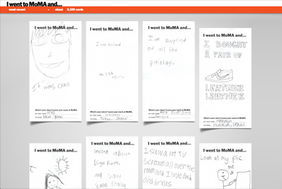
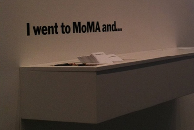
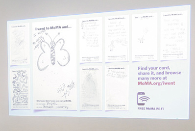
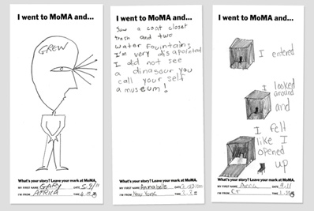
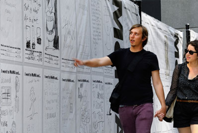

I Went to MoMA and...









{kind=link}
{kind=link}
{kind=link}
{kind=link}


I went to MoMA and…
What began as an impromptu experiment to see what would happen if MoMA visitors were given an opportunity to share their experiences at the Museum – whatever those might be – has now been given new life. The amazing range of beautiful, clever, and heartfelt hand-written – and hand-drawn – responses that once graced the walls of the Museum lobby in pencil and paper have returned in an ever-growing stream of responses based on a collaboration between the MoMA and POKE New York.
Getting it onto the museum's walls
Together we developed a new digital and social platform to make it easier for MoMA visitors to share their stories about their visit to the museum and discover others. To submit their cards, visitors input their card into one of two custom-built scanning stations (one in the Lobby and another in Cafe 2). At the push of a button, their card is scanned and returned seconds later and put into a queue where the card is projected onto MoMA's walls alongside all of the other submissions.
Sharing your MoMA story
Using the unique URL printed on their card, visitors can easily find their story on moma.org/iwent where they can also claim it, tag it, and then share it via Twitter, Facebook, or embed. Their card is also added to the virtual wall, which visitors can browse the entire collection of experiences or search for cards by keyword. Only time will tell which cards gain notoriety across the social web, but in the meantime, viewers can explore favorites from the MoMA staff in the featured section of the website.
Recent Chatter
The Museum of Modern Art in New York City wanted an interactive way to capture the experience of art with the museum’s three million yearly visitors. What eventually developed was an open-ended guestbook of sorts called the “I went to MoMA and…” Project.
– laughingsquid.com
Quite by accident the other day, I found an experiment on the Museum of Modern Art's website, which initially seemed so very disappointing. But looking further, it turned out to be an interesting, and maybe promising, exercise. It might even strengthen bonds between visitors and MoMA. And that would be a mighty accomplishment. The feature is called "I went to MoMA and..."
– artsjournal.com
The Museum of Modern Art recently began asking visitors for feedback and messages. Most of the kids who filled in the form had positive reviews, but one kid was clearly let down. Shame on you MoMA!
– theawesomer.com
Try the "I Went to Moma and..." free scanning fun on the ground floor. You get your own card where you can write, or draw, anything you like and have it scanned in for projection on the wall. Each card has its own URL and you can view it online later. I scanned mine and shared it on FB real time. Fun!
– Robert Z. on yelp.com
After visiting the MoMA, visitors are asked to fill out this card, scan their response in a fancy little machine, and contribute to the "I went to MoMA and..." project. Responses are projected on a wall in the MoMA entryway.
– smittenandswell.blogspot.com
Love this! RT @museummodernart: Back by popular demand: the new and improved "I went to MoMA and..." bit.ly/uNtiK6
— Caroline! (@NycCaliGal) December7, 2011
Such a great way of letting audiences display feedback j.mp/tN0O5F
— Kate Evans (@iamkateevans) December7, 2011
What a charming way to get feedback: Back by popular demand: new & improved "I went to MoMA and..." RT @MuseumModernArt bit.ly/uNtiK6
— Cdn Art Foundation (@Cdn_Art_Fdn) December7, 2011
Love and miss MOMA. Dino ad still makes me laugh! RT @MuseumModernArt: Back by popular demand: "I went to MoMA and..." bit.ly/uNtiK6
— Kat Langdon (@kat) December7, 2011
The "I went to MoMA and..." project evolves to 2.0 with a fab new website and social media sharing capabilities: moma.org/iwent/
— Colleen Brogan (@cbrogan12) December7, 2011
"I went to MoMA and..." Love this campaign. All languages, ages,&Cultures. Again proving that simple works bit.ly/u11iy7
— Rayna (@RaynaNyc) December8, 2011
New interactive "I went to MoMA and..." displays in Cafe 2 & the Main Lobby! Cornelius from NYC added this one today: bit.ly/vaUOUM
— MoMA Film (@MoMAFilm) December9, 2011
moma.org/iwent/ - "It’s like a pencil-drawn version of Twitter." (MoMA)
— Teresa Soares (@MTeresaSoares) December8, 2011
twitgoo.com/52ma1v how #moma interacts with visitors moma.org/iwent
— Ashley L (@ashlucinni) December 10, 2011